教える側が、もう限界
新人教育がOJT任せ。先輩の負担だけが膨らみ、指導の中身が人によってバラバラになる。
新入社員合同研修 ／ 堺・なかもず ／ 2027
新入社員育成プログラム
「KIZUKU」
採用の先まで、育てきる。
人が育てば、会社はもっと強くなる。
15日で基礎を定着させ、その後1年、配属後の定着まで伴走します。
育成方針
KIZUKUは、マナー研修の切り売りではありません。 人材派遣・人材紹介で人と企業をつないできたショウヨウが、 採用のあと「活躍するまで」を1年かけて背負うプログラムです。
知識を並べて終わり、にはしません。 あいさつ、報連相、数字の見方、現場の安全。必要な型を、15日間の研修で習得します。 楽しさと、企業が安心して任せられる厳しさ。両側面から新入社員を育てていきます。
新卒が辞める理由の多くは、入社直後ではなく配属の後です。 そのため集合研修で終わらせず、面談では社外メンターが本音を拾い、6月と9月のフォローアップ研修ではキャリアイメージを湧かすことのできるような仕組みにしております。
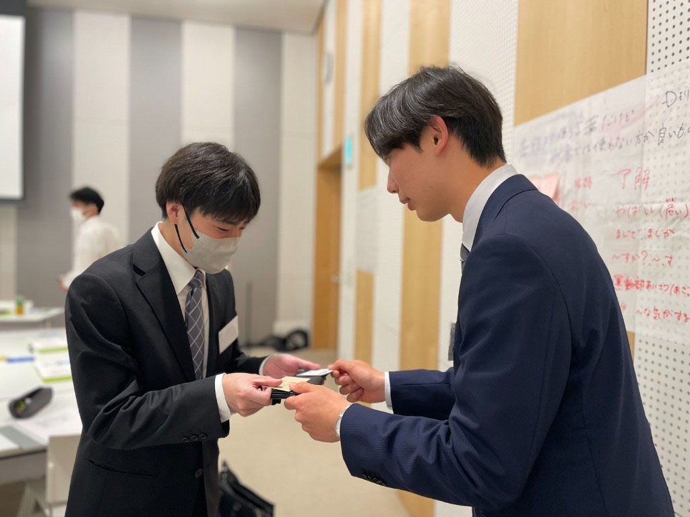
採用で終わらせない。
活躍まで支える。
新人教育がOJT任せ。先輩の負担だけが膨らみ、指導の中身が人によってバラバラになる。
社会人の型がないまま配属すると、覚えることから始まる。戦力化が、その分だけ遅れる。
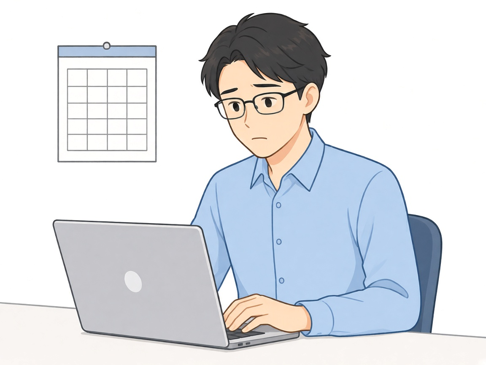
配属直後の壁と、夏のマンネリ。フォローが切れたところで、辞める話が始まる。
〈KIZUKUの強み〉
社会人基礎5日＋職種特化8日＋キャリア2日。グループワークや発表を通じて社会人としての基本を身につけます。
社外メンターとの1on1。言えない不満と離職の芽を、企業へフィードバックします。
4月の研修で終わりではなく、しっかりと定着するようにフォローアップします。
開催情報
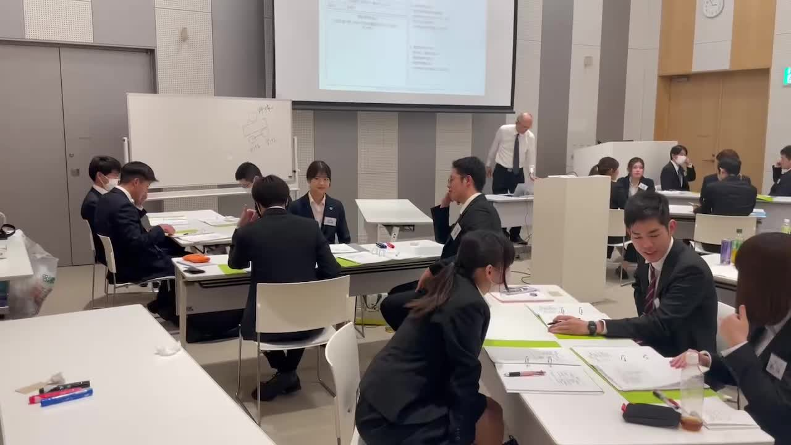
| 研修名 | KIZUKU（ショウヨウ 新入社員育成プログラム） |
|---|---|
| 実施企業 | ショウヨウ株式会社 |
| 日程 | 2027年4月5日（月）〜4月23日（金） 9:00〜17:00 平日15日間／土日を除く（1日7時間 × 15日＝105時間） |
| 会場 | 堺市産業振興センター（なかもず駅徒歩4分） 〒591-8025 大阪府堺市北区長曽根町183-5 大阪メトロ御堂筋線 なかもず駅8番出口から徒歩約4分 |
| 開催形式 | 対面 |
| 対象 | 入社1年目の新入社員（高卒・大卒いずれも可／2年目以降は原則対象外） |
| コース | 営業コース ／ 製造コース |
| 費用 | ※お問い合わせください! |
| 定員 | 50名（先着順）。少人数（1名〜）から参加できます |
| 申込締切 | 2026年12月25日（金） |
得られること
新入社員育成プログラム「KIZUKU」を受講することで新入社員の言動が大きく変わります。
「なんとなくできる」を、誰からも信頼される行動へ。
あいさつ、敬語、身だしなみ、名刺交換、報連相。
社会人としての基本を、知識で終わらせず、実践を通じて身につけます。
相手を思いやり、自ら考えて行動できる。
そんな信頼される社会人の土台を築きます。
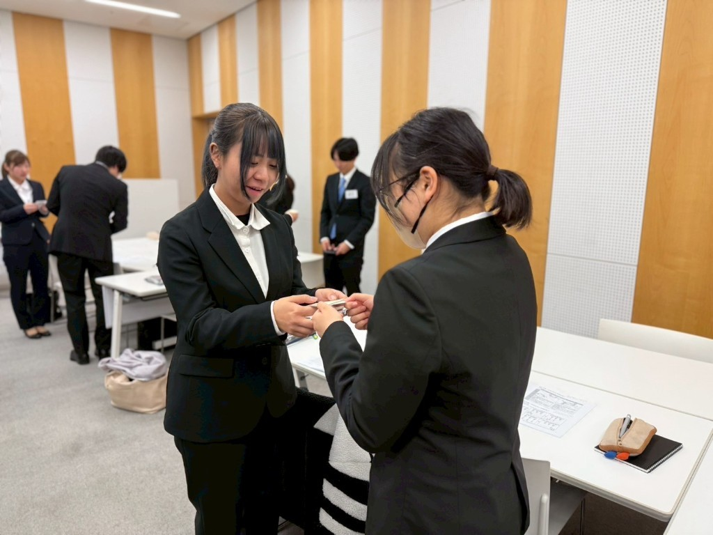
「言われたからやる」を卒業できる
営業・製造など、現場の仕事を題材に、仕事の目的や周囲との連携を学びます。
現場で求められる視点を知ることで、指示を待つだけではなく、自分の役割を理解し、考えて行動する力を育てます。
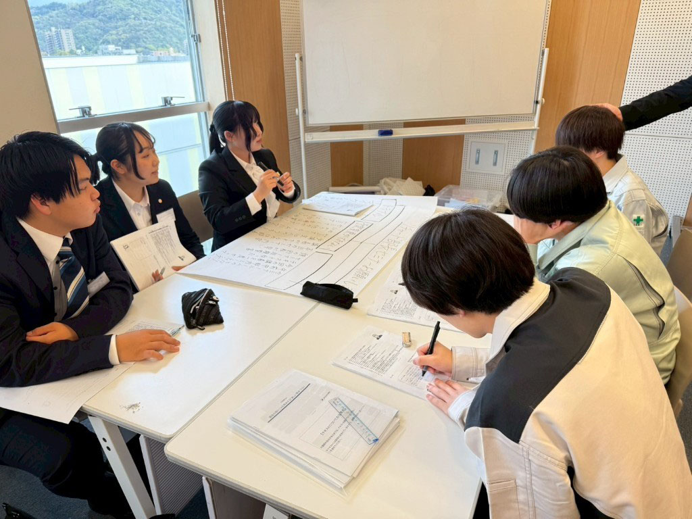
「この会社で頑張りたい」を、自分の言葉に。
自分の強みや仕事への想いを見つめ、これから目指したい姿と具体的な行動を言葉にします。
他社の同期との交流を通じて新たな視点に触れ、自社で働く意味や自分にできることを考える。
納得感を持って仕事に向き合う第一歩につなげます。
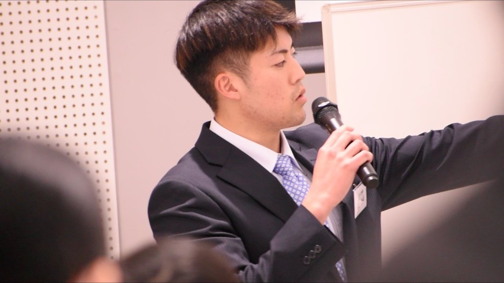
研修プログラムの実績
本部の実績とノウハウを受け継ぎ、ショウヨウが「KIZUKU」としてお届けします。
社会人としての土台を築き、自ら考え、行動する力を育む。新入社員の成長を、企業の未来につなげます。
※上記は本部実績。（2026年時点、11年間累計）
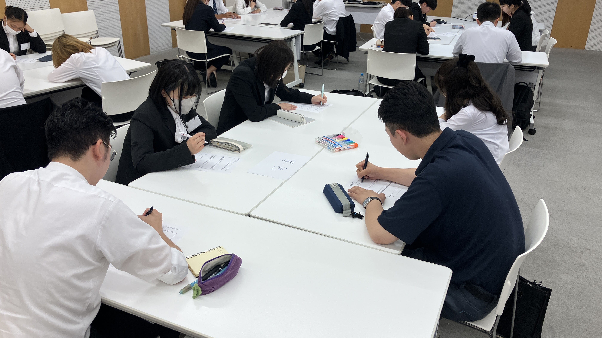
プログラム
グループ討議、ロールプレイ、発表。KIZUKUでは、アクティブラーニングを7割以上で行います。
社会人と学生の違い、敬語、名刺交換、上座・下座、オンライン会議、報連相、G-PDCA。全員共通です。
営業コースまたは製造コースを選択。配属を意識した実践に分かれます。講師もコースごとに違います。
異業種の他社同期と共に、コミュニケーション法やキャリアについて学び、自身の仕事で活かせる状態にします。
担当：小柳講師。社会人の型と、最後のキャリア設計までを見ます。
マナー、専門、キャリア。行動計画までその場で書かせます。
社外メンターが本音とメンタルの兆しを聞き、企業へ返します。
配属直後の壁と、夏のマンネリ。他社同期と会い、目標を置き直します。
1年の振り返りと、次の目標。辞めないだけでなく、活躍する側へ。
講師
共通と営業は小柳講師。製造は重松講師が登壇します。
D.O.M 代表（コンサル事業）
ビジネスマナー 5日＋営業 8日
講演、学校授業、スポーツメンタルトレーナー事業を通じて、 可能性に気づくきっかけをつくるため、全国で50講演以上開催。
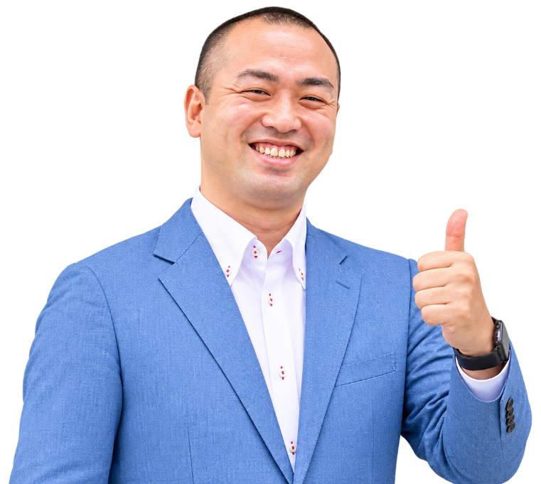
幸献コンサルティング株式会社 代表取締役
1994年、現・オリンパスの海外生産部門へ。フィリピン、香港、中国、ベトナムと約10年、工場の現場に立ちました。 ベトナムでは新工場を16カ月で立ち上げ、工場長として1,000人規模を3,000人規模へ育てています。 2026年5月、幸献コンサルティングを設立。「働く誇り」を現場からつくる、が仕事です。
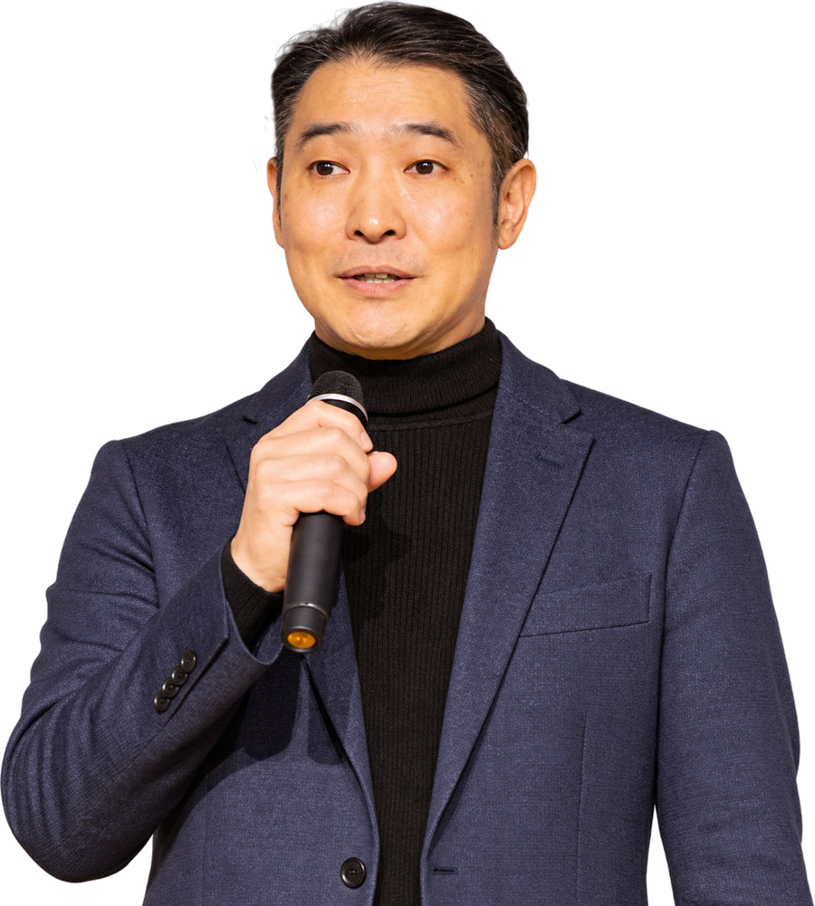
お客様の声
研修を通じて生まれた変化を、実際に見届けた企業・受けた受講生の声からお届けします。
企業担当者の声
目の色が変わった。「辞める・辞めない」の議論が、職場から消えました。新入社員が、自分の将来を考えるようになったことが何よりの効果です。
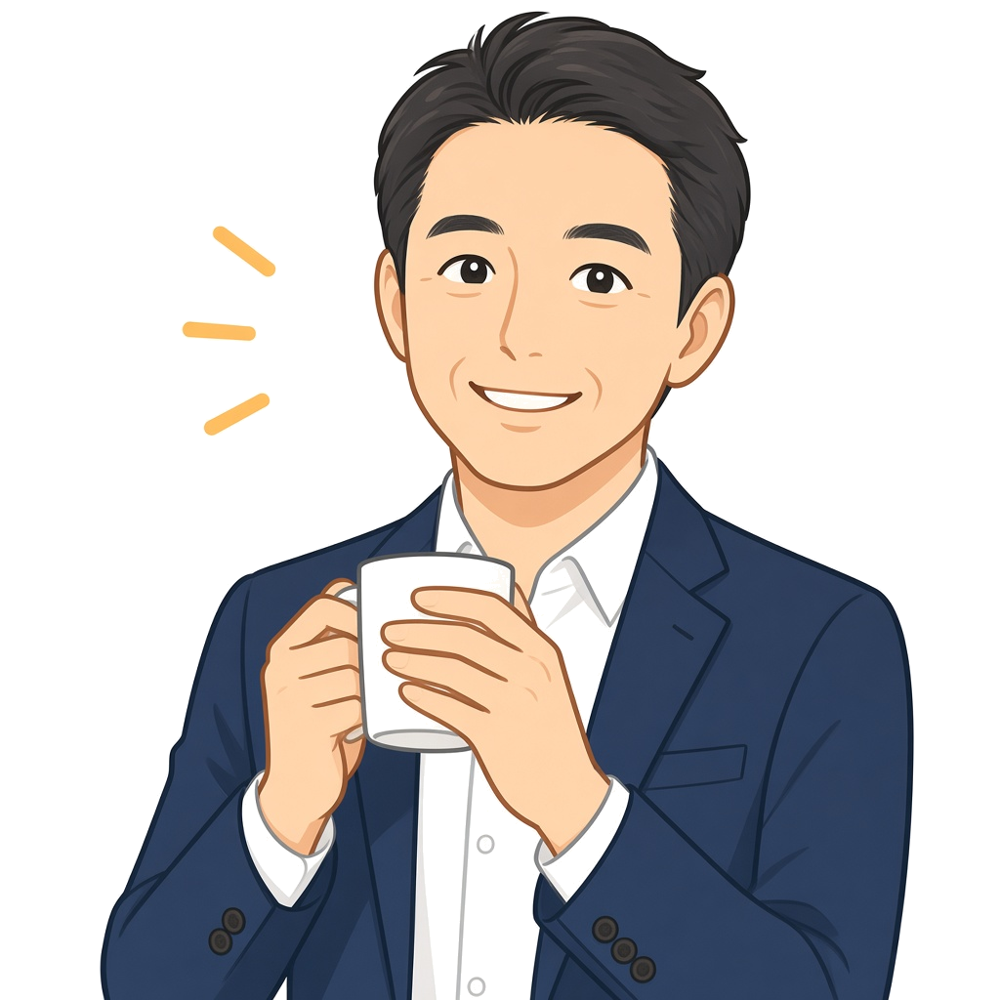
日に日に、表情と行動が変わっていくのが分かりました。違う業界の仲間と学んだ経験が、明るさとモチベーションにつながっています。
受講生の声
自分の仕事が会社の利益にどう繋がるか、構造的に理解でき、配属後の業務へのコミット感が劇的に変わりました。
結論ファーストと相手目線のコミュニケーションが徹底的に習慣化され、最初の営業同行で即、新規リードを獲得できました。
ショウヨウの約束
採る力で終わらせない。育てる仕組みを渡す。
私たちは人材派遣と人材紹介で、企業と働く人のあいだに立ってきました。 採用のあとの立ち上がりと定着が、中小企業の未来を分けることも、その現場で見てきました。 KIZUKUは、その1年を再現できる形にしたものです。
人を紹介するだけではなく、
人が活躍するところまで支える。
研修風景
仲間と考え、対話し、実践する。
さまざまな経験を通じて、自分の可能性に気づき、社会人としての一歩を踏み出していく。
「KIZUKU」の学びの風景をご覧ください。
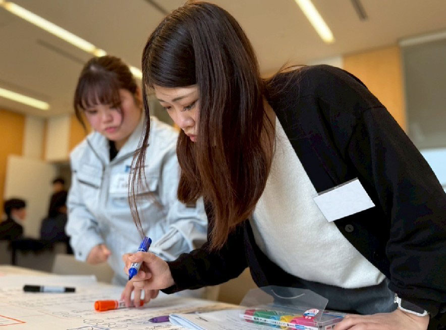
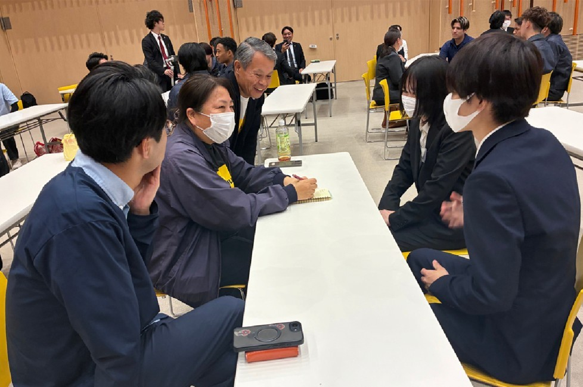
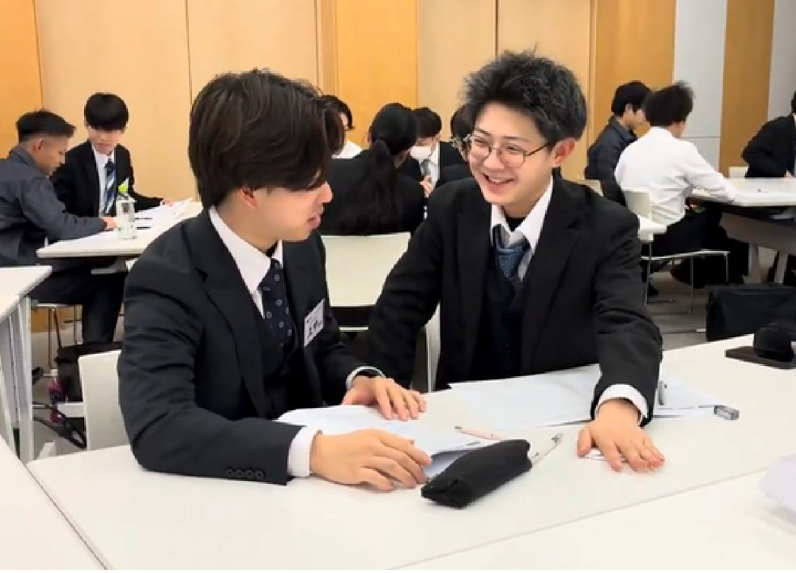
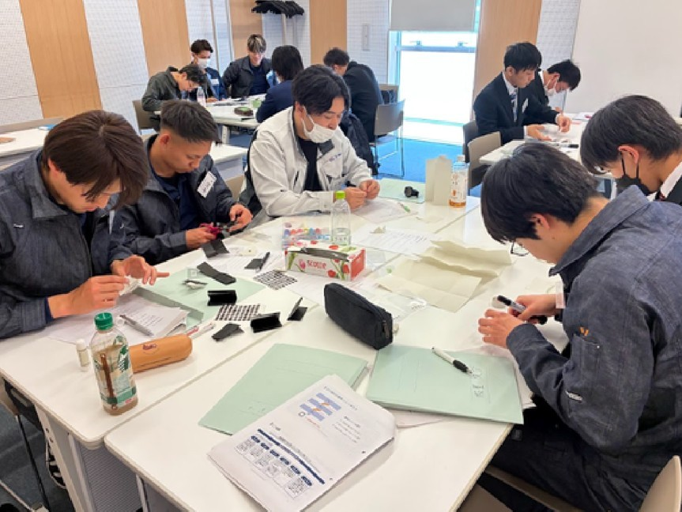
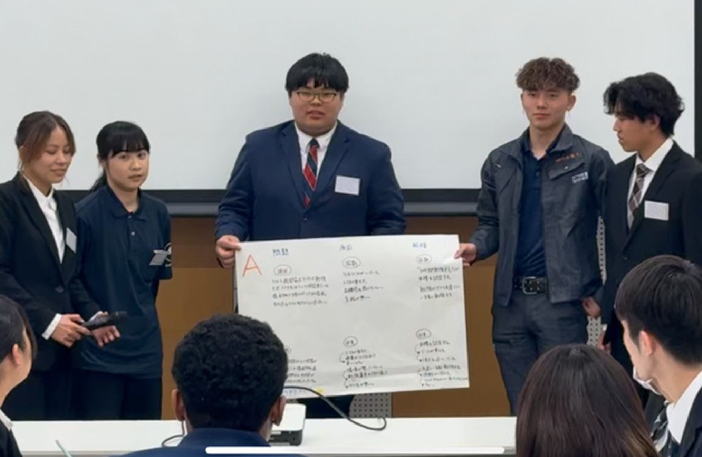
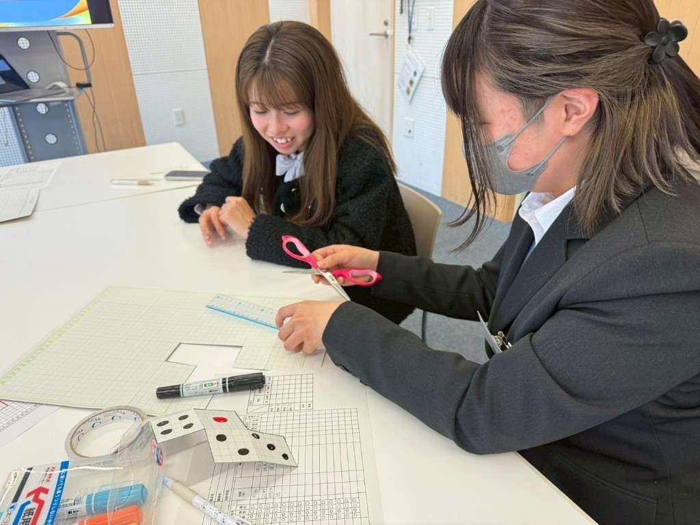
FAQ
KIZUKU ｜ 新入社員育成プログラム
人が育てば、会社の未来が変わる。
新入社員の成長は、会社の未来への投資です。
社会人としての土台を築き、自ら考え、行動できる人材へ。
人と企業をつないできたショウヨウが、入社後の成長を支えます。